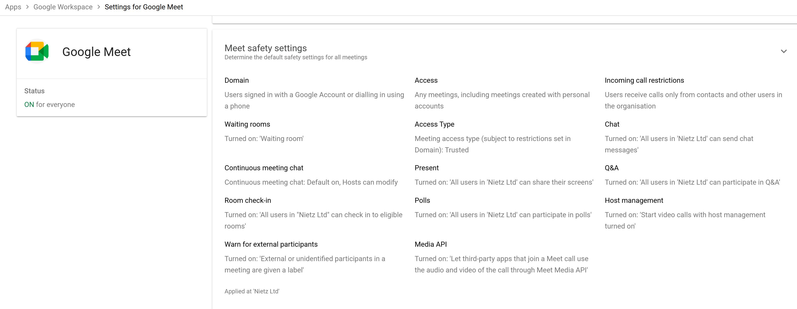

Google Workspace 10: Google Meet
Meet safety, access and collaboration controls.
10. Google Meet
Overview
Configured Google Meet safety and access controls for secure organisational communication.
The focus is on:
Secure meeting access
Host control and moderation
Safe collaboration with internal and external users
Supporting hybrid working environments
Meet Safety Settings
Google Meet safety settings were configured at the organisational level to enforce consistent behaviour across all meetings.

Configuration
Meeting access: Allowed (including external meetings)
Access type: Trusted
Waiting rooms: Enabled
Continuous meeting chat: Enabled (host controlled)
Room check-in: Enabled
External participant warning: Enabled
Screen sharing: Enabled for all users
Polls and Q&A: Enabled
Chat messaging: Enabled
Host management: Enabled by default
Incoming call restrictions: Limited to organisation and contacts
Meet Media API: Enabled (third-party integrations allowed)
Design Rationale
Waiting rooms ensure only authorised participants join meetings
Host management provides control over participant actions
External warnings improve awareness of external attendees
Trusted access model balances usability with security
Collaboration features (chat, polls, Q&A) support effective meetings
Validation
Meetings require host approval where appropriate
External users are clearly identified in sessions
Hosts retain control over meeting behaviour and permissions
Meeting features behave consistently across users
Real-World Considerations
External access should be restricted further in high-security environments
Host controls should be enforced organisation-wide for consistency
Meeting policies should align with company data security requirements
Integration with calendar ensures seamless scheduling and joining
Summary
Evidence covered:
Centralised configuration of Google Meet policies
Implementation of secure meeting controls
Support for internal and external collaboration
Alignment with modern workplace communication standards